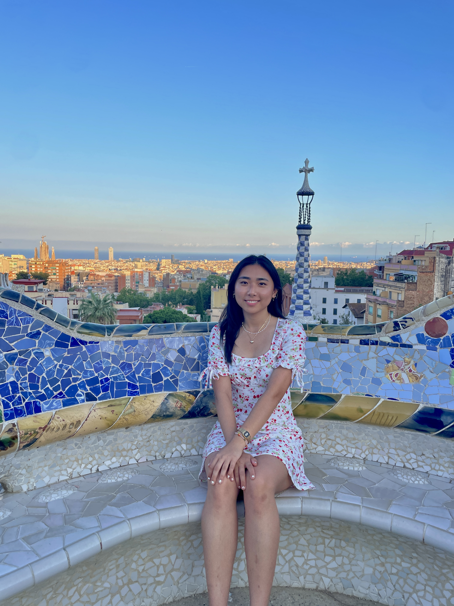
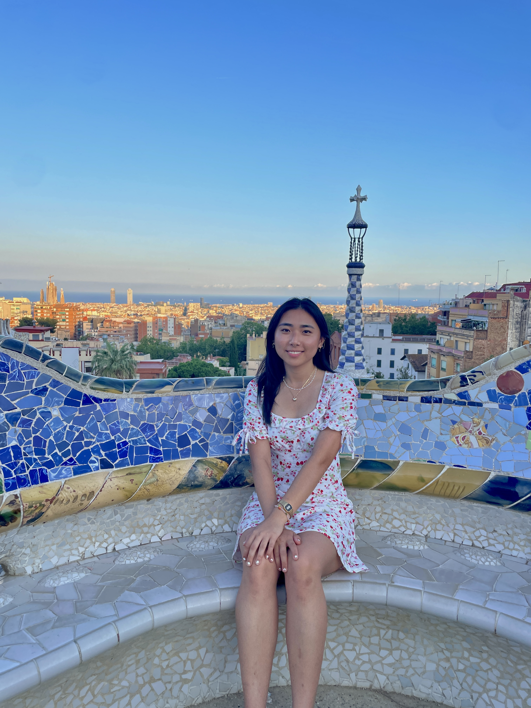
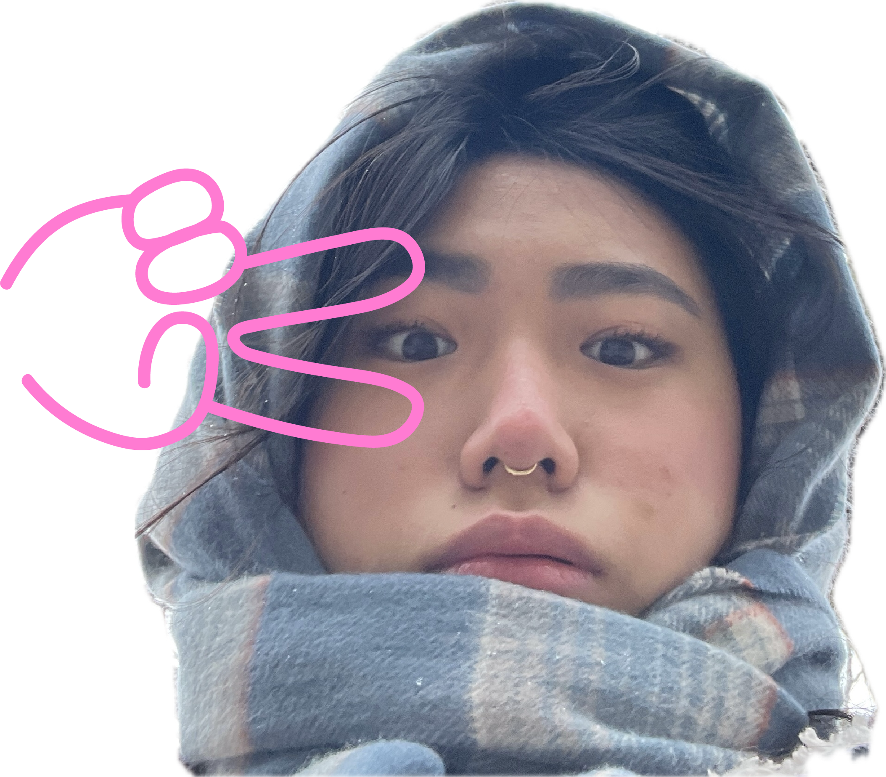

About me!
other works!

more! about me 🪩
- Aries, ESFP
- current favorite fruit is tangerine
- pretty good at sudoku
- not bad at tetris either
- 57 books into my 2024 Goodreads reading challenge!
- trackpad wizard
- favorite gatorade flavors: lemon-lime, icy charge, arctic blitz
- did karate for ~10 years
- blind box enthusiast
- deep hatred for the airpods low battery notification sound